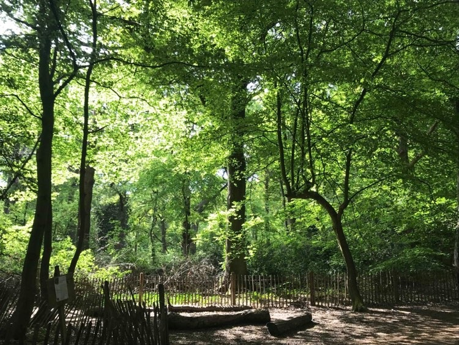

Mariko
I like eating and cooking!
I enjoy taking a walk in the woods and parks in London.
Information
St John's Wood, London
LSE Alumni
Watching Spiritual Channels on YouTube
Skills
HTML
CSS
English & Japanese
Arabic & Spanish
About Me
My name is Mariko.
I am a Japanese from Tokyo currently living in St John's Wood in London.
My favorite places in London are: Highgate Wood, Regent's Park, Hampstead Heath, Paddington Recreation Ground, Oxford Circus and many more! I like watching spiritual channels on YouTube to improve my vibrations!
Interests
- Cooking
- Walking in the Wood 
- YouTube Akiko Spiritual Namiki san Mocchi Starseed Channel Mademoiselle Ai